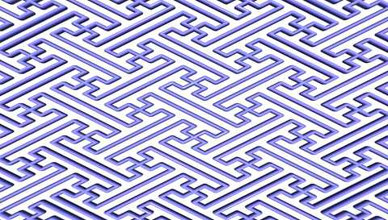
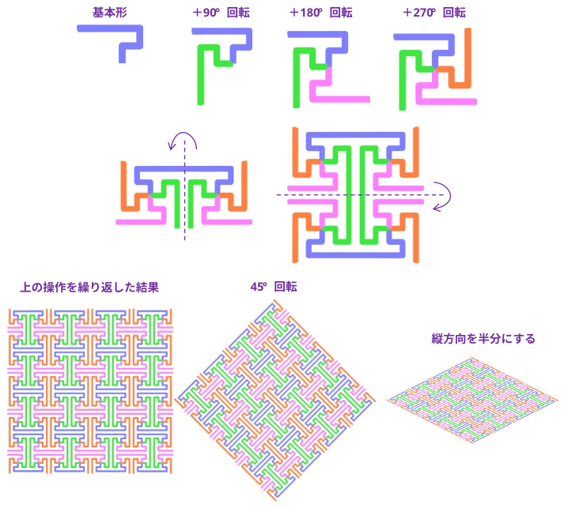
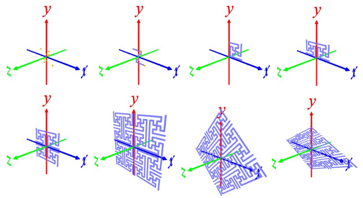

① l data/sayagata_basic.txt ･･･ 紗綾形の座標データをロード
② polyline ･･･ メッシュ化。必要に応じてパイプの画数, パイプ半径を指定する
③ r 0 0 90 4 ･･･ z 軸周りに 90°回転を4回繰り返す
④ i ･･･ サイズを確認
(結果：例)
x 0.500000 -0.250000 - 0.250000
y 0.500000 -0.250000 - 0.250000
z 0.040000 -0.020000 - 0.020000
⑤ t 0.25 0.25 0 ･･･ x の最小が0, y の最小が 0 になるように移動
⑥ r 0 180 0 2 ･･･ y 軸周りに 180°回転。回転前と回転後の 2 個ほしいので 2 を指定
⑦ r 180 0 0 2 ･･･ x 軸周りに 180°回転。回転前と回転後の 2 個ほしいので 2 を指定
好きなだけ、④～⑦を繰り返した後
⑧ r 0 0 45 ･･･ z 軸周りに 45°回転
⑨ s 1 1/2 1 ･･･ y 方向を 1/2 にする
